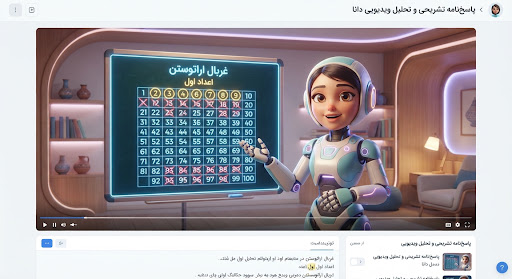

فصل ۲: حساب اعداد طبیعی
تحلیل ویدیویی استاد دانا

سوال شماره ۷
غربال اعداد اول • سطح متوسطدر روش غربال اراتستن برای تعیین تمام اعداد اول بین ۱ تا ۱۰۰، چهلمین عددی که روی آن خط میخورد کدام عدد است؟
پاسخ تشریحی گامبهگام دانا
در الگوریتم غربال، اولین قدم همیشه خط زدن عدد ۱ است (چون نه اول است و نه مرکب). بنابراین عدد ۱، اولین عددی است که خط میخورد.
سپس سراغ عدد اول ۲ میرویم؛ خود ۲ خط نمیخورد اما مضارب آن یعنی ۴، ۶، ۸، ... خط میخورند. تعداد اعدادی که تا اینجا نیاز داریم:
چون عدد ۱ خط خورده، برای رسیدن به چهلمین عدد، باید ۳۹ مضربِ زوجِ ۲ را بعد از ۲ بشماریم:
اما دقت کنید! مضرب اول ۴ (۲×۲)، مضرب دوم ۶ (۲×۳) است... پس چهلمین عدد برابر است با: ۲ + (۴۰ - ۱) × ۲ = عدد ۸۲.
بیشتر دانشآموزان فراموش میکنند که عدد ۱ هم خط میخورد! اگر ۱ را در نظر نگیرید، به اشتباه گزینه ۳ (عدد ۸۴) را انتخاب میکنید.
از هوش مصنوعی دانا بپرس تا بیشتر توضیح بده
سوال شماره ۸ (پاسخ صحیح ✔️)
ک.م.م و ب.م.م به روش تجزیه درختیک.م.م دو عدد ۳۶ و ۵۴ کدام است؟
عدد بزرگتر (۵۴) را دو برابر کن: ۵۴ × ۲ = ۱۰۸. چون ۱۰۸ بر ۳۶ بخشپذیر است (۳ × ۳۶ = ۱۰۸)، بلافاصله ک.م.م برابر با ۱۰۸ است و نیازی به کشیدن نمودار درختی نیست!
تحلیل پیشرفت تو در این فصل
تو در مبحث «تشخیص اعداد اول» ۹۰٪ تسلط داری. با حل ۲ سوال مشابه از روش غربال، این مبحث را ۱۰۰٪ میکنی!